Need for Speed es una película de acción estrenada en 2014, basada en la popular saga de videojuegos de carreras. La historia sigue a Tobey Marshall, un mecánico y corredor callejero que, tras ser traicionado por un rival y acusado injustamente, termina en prisión. Al recuperar su libertad, decide participar en una peligrosa carrera clandestina a través de Estados Unidos con el objetivo de vengarse y limpiar su nombre. La película se desarrolla en el mundo de las carreras ilegales y los autos de alta gama, donde predominan la velocidad, la adrenalina y la competencia. A diferencia de otras películas del género, se caracteriza por el uso de escenas reales de conducción, con menos dependencia de efectos especiales digitales. Desde un punto de vista personal, la película no tuvo un impacto muy grande en el cine, pero logró destacarse dentro de las adaptaciones de videojuegos. Es valorada especialmente por los fanáticos del automovilismo por sus escenas de acción más realistas y su enfoque en las carreras auténticas.
Una de las canciones más reconocidas de la banda sonora de Need for Speed: The Movie es "Roads Untraveled", interpretada por Linkin Park. El tema acompaña algunos de los momentos más emotivos de la película y refleja los sentimientos de superación, pérdida y búsqueda de un nuevo camino que vive el protagonista a lo largo de la historia.
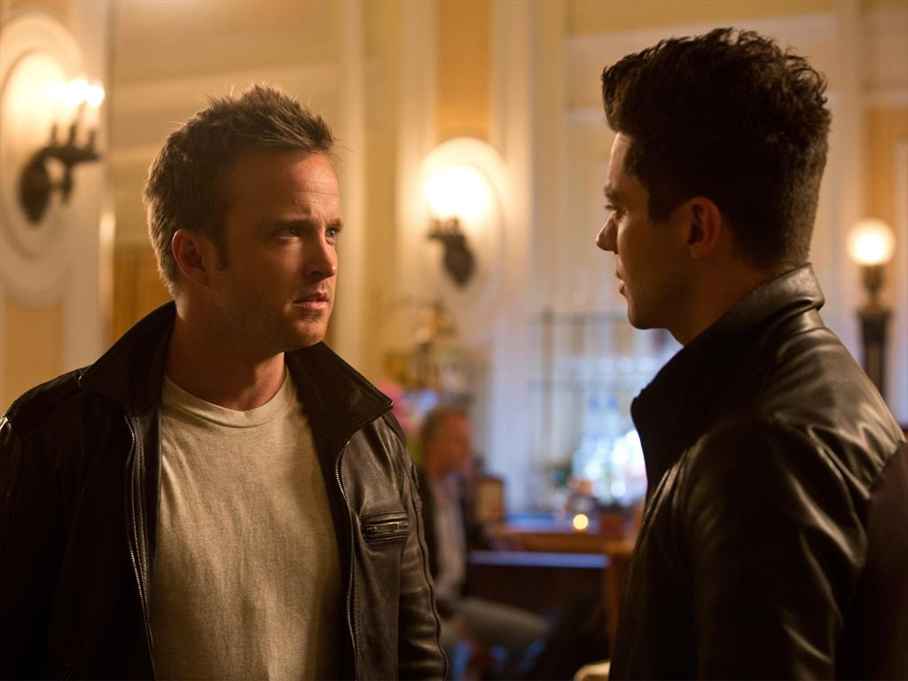
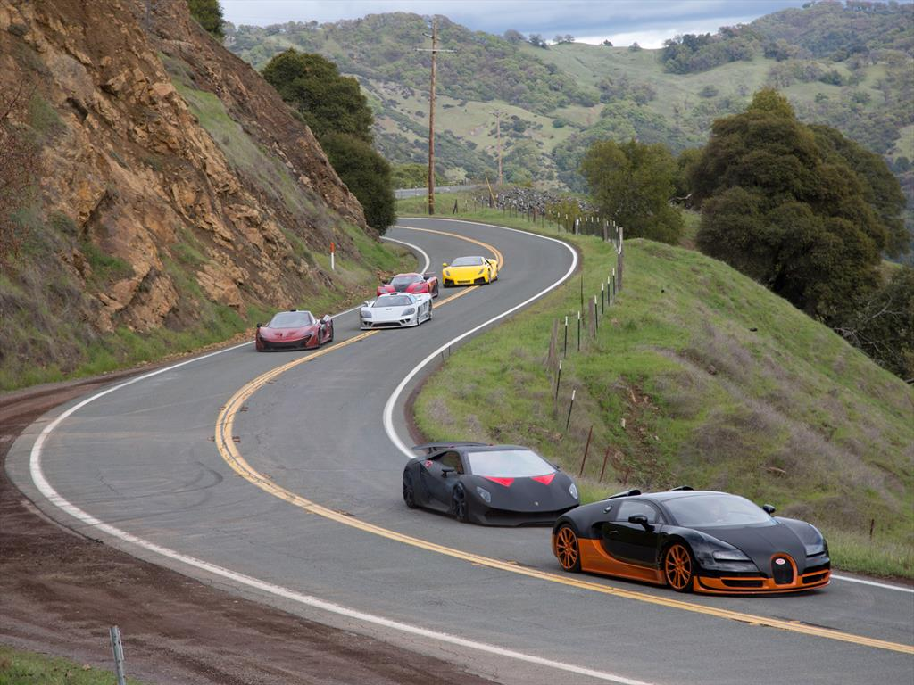
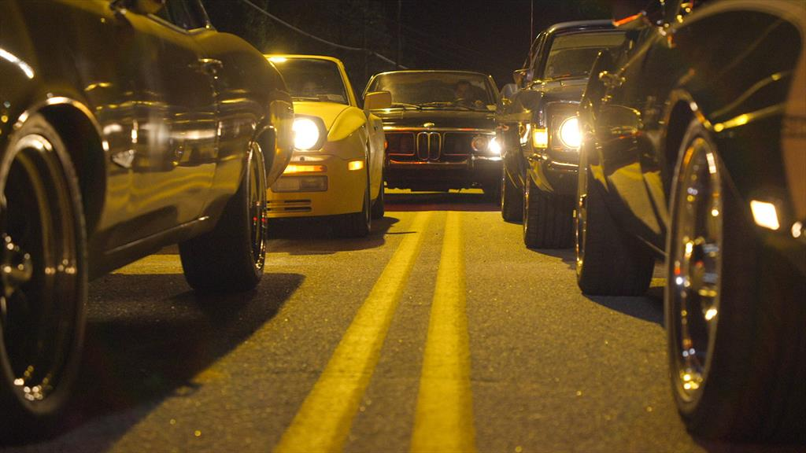
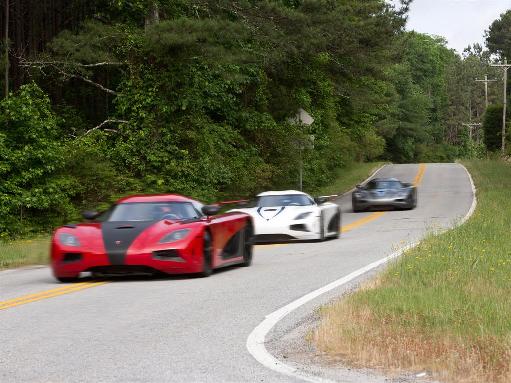


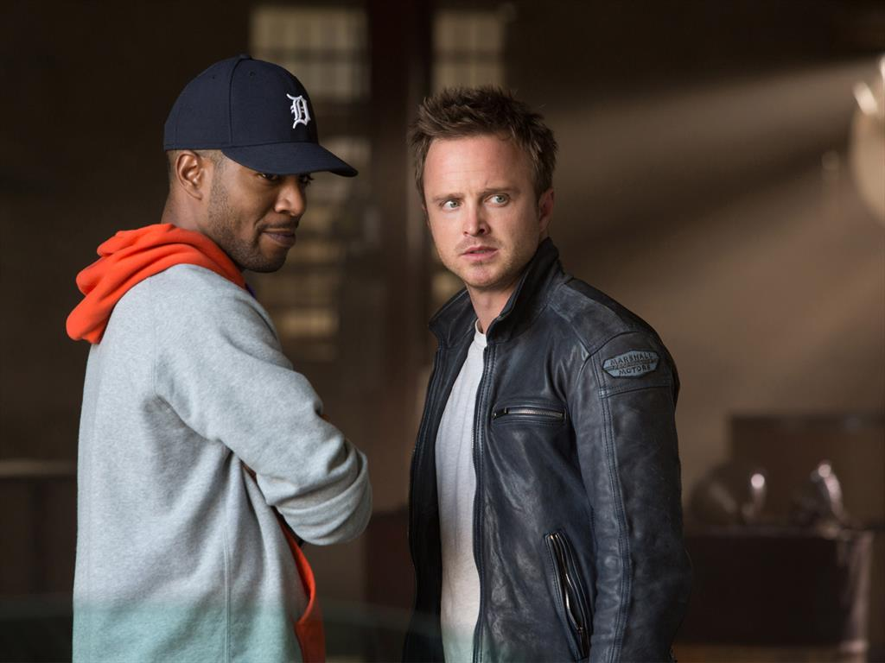

La película fue filmada en diferentes lugares de Estados Unidos, utilizando tanto ciudades como rutas abiertas para dar mayor realismo a las escenas. Entre las locaciones se encuentran ciudades como Detroit y Chicago, además de diversas carreteras y paisajes rurales. Muchas de las escenas de carreras fueron grabadas en exteriores, lo que permitió mostrar persecuciones más auténticas y dinámicas. Aunque también se utilizaron estudios para algunas tomas, la producción priorizó los escenarios reales.
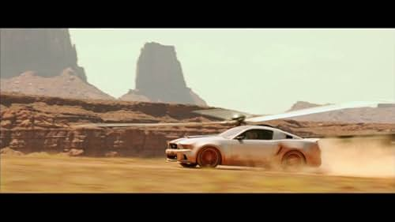

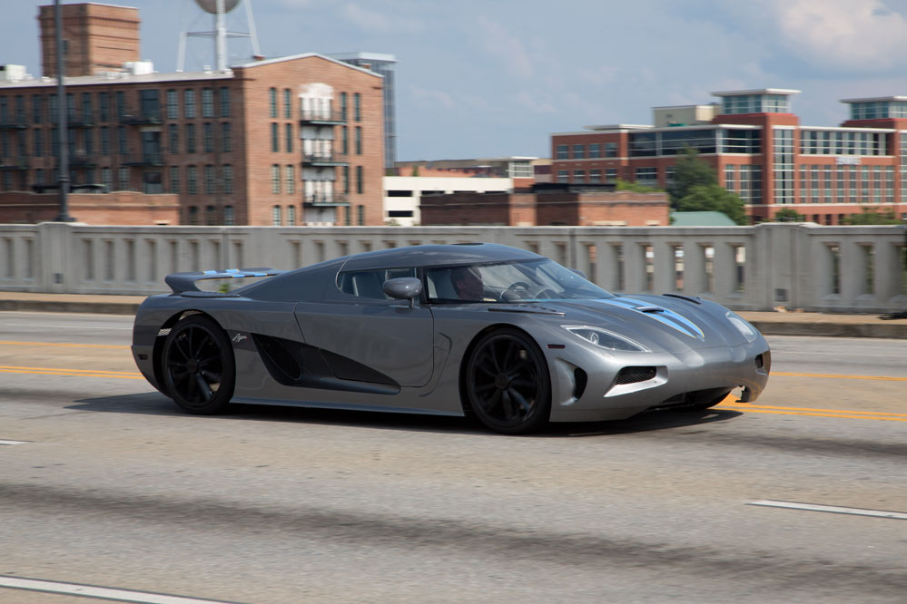
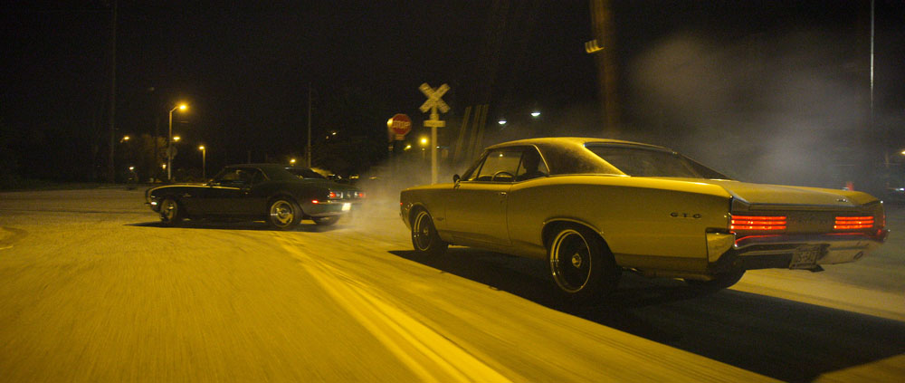
La película fue dirigida por Scott Waugh, quien tiene experiencia en películas de acción y en la realización de escenas con vehículos reales. El guion fue escrito por George Gatins y John Gatins. El personaje principal, Tobey Marshall, es interpretado por Aaron Paul, conocido por su participación en la serie Breaking Bad. La producción se enfocó en utilizar autos reales y minimizar el uso de efectos especiales generados por computadora, lo que le dio un estilo más realista y cercano a las carreras verdaderas


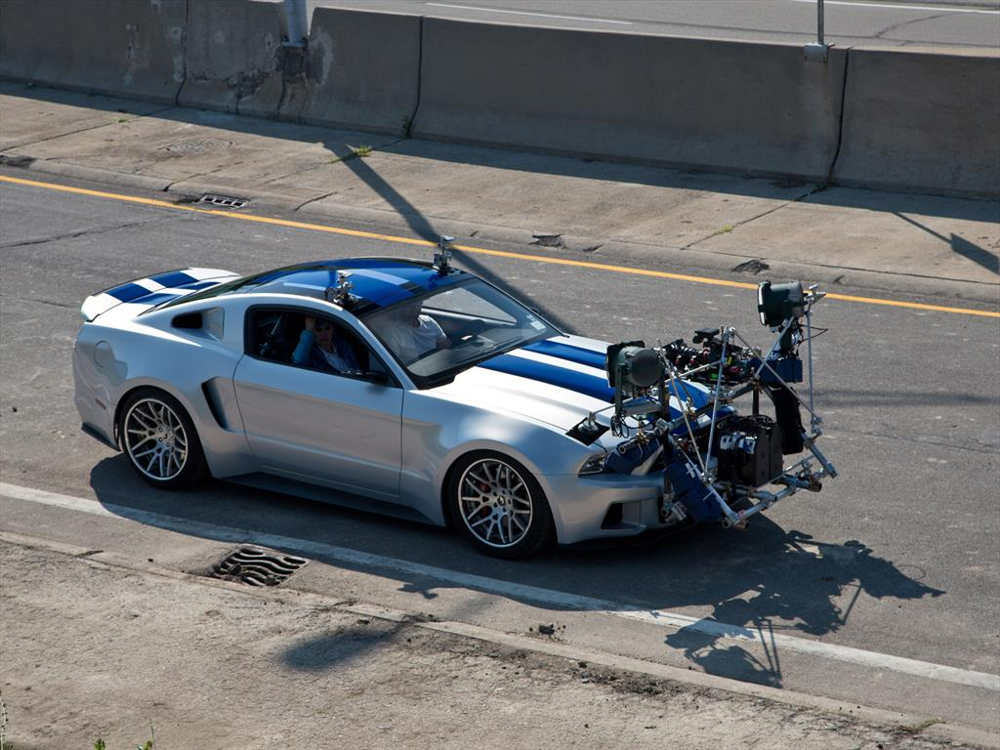
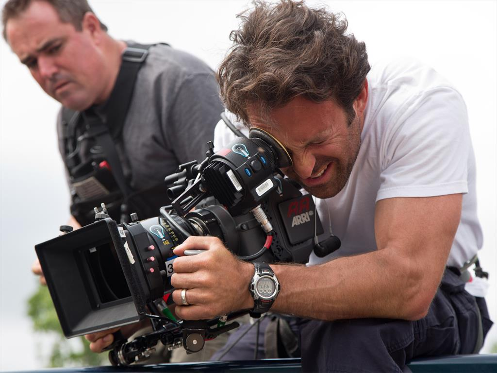
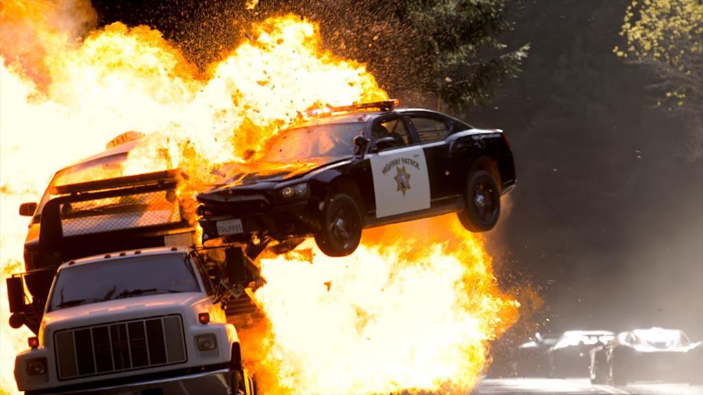